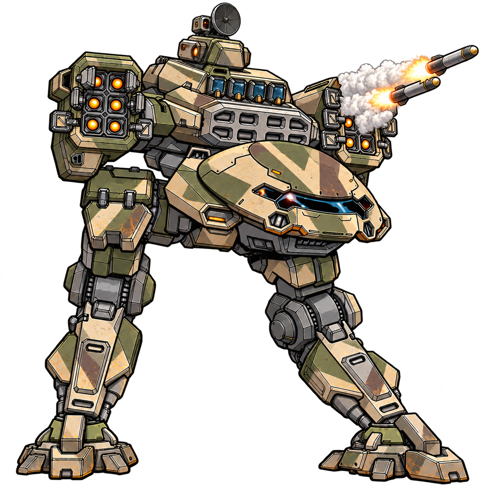

THE OMNISCIENT OVERLORD
GMS CHOMOLUNGMA · HORUS GOBLIN · SSC SWALLOWTAIL · electronic warfare and command build

| Designation | AVERNA |
|---|---|
| Frame | GMS CHOMOLUNGMA (retained, never reframed) |
| Pilot | RURIK "DAEMON" VARGSKEL · LL0 · Fixer |
| Role | ECM & C3, squad central nervous system |
| Licenses | HORUS GOBLIN I–III · SSC SWALLOWTAIL I–III |
| Tech Attack | +3 (frame +1, SYSTEMS 2) |
| Save Target | 11 + GRIT, the number enemies must beat to resist AVERNA |
| Threat signature | Free damage, sensor dominance, electronic shutdown |
Quick Guide
Ride the GMS CHOMOLUNGMA. Take the HORUS GOBLIN and SSC SWALLOWTAIL ranks for their systems, never for their chassis. Mark what the squad is about to shoot, and the Autopod pays you back in free damage.
The levels, LL0 to LL6
| LL | License rank | Talent rank | Core bonus |
|---|---|---|---|
| LL0 | none yet | Hacker I · Spotter I · Leader I | not yet |
| LL1 | GOBLIN I | Spotter II | not yet |
| LL2 | GOBLIN II | Spotter III | not yet |
| LL3 | GOBLIN III | Hacker II | Integrated Weapon |
| LL4 | SWALLOWTAIL I | Leader II | |
| LL5 | SWALLOWTAIL II | Leader III | |
| LL6 | SWALLOWTAIL III | Hacker III | a second core bonus |
The two licenses are three ranks each and interleave freely from LL1 on. This order is the one the SP budget below can afford. Plan B spends LL4 to LL6 on Technophile I-III instead.
SP budget: SP = frame SP 7 + 1 per two points of SYSTEMS + GRIT. That is 8 at LL0 (7 + 1), 9 at LL1, 10 at LL2, 11 at LL3. The fielded load is exactly 8, with no slack.
The loop
LOCK ON a target within Sensors 15 (quick action, no attack roll, never fails)
an ally attacks it and consumes the mark for +1 Accuracy
AUTONOMOUS ASSAULT fires, 1/round, target within Range 15
automatic hit, 3 Kinetic, no action, no rollThe systems that do the work: Autopod (GOBLIN I, 1 SP) for the free 3 Kinetic · H0R_OS System Upgrade I (2 SP, at LL3) for Puppet System and Eject Power Cores · Lotus Projector (SWALLOWTAIL I) for sensor truth in a Burst 2 · ATHENA-Class NHP (SWALLOWTAIL III, 3 SP) for Simulacrum. The rest of the ranks are depth, and each has its own section below.
Why this hull: the GOBLIN frame out-hacks a CHOMOLUNGMA and dies to one committed strike. Systems survive on a hull that is still standing at the end of the fight.
What to do on a turn
- LOCK ON a character within Sensors (15) and line of sight. It is a Quick Tech with no attack roll: E-Defense has nothing to do with marking.
- INVADE the thing that matters: roll 1d20 + Tech Attack (+3) against its E-Defense. On a hit it takes 2 Heat and you add one option (Fragment Signal, or Puppet System, or Eject Power Cores).
- Let the Autopod fire. A striker attacks the marked target and consumes the mark, so Autonomous Assault hits that target for 3 Kinetic automatically. No action, no roll.
1. Core Concept & Build Philosophy
The Framework: "Chomolung-lin"
Ride the GMS CHOMOLUNGMA. Load every piece of HORUS and SSC electronic warfare you can afford onto it. Never trade the chassis away.
The honest version of that argument, now that the frame blocks are on the table:
- The GOBLIN frame out-hacks a CHOMOLUNGMA. Stock GOBLIN: Sensors 20, Tech Attack +2, and the Liturgicode trait for +1 Accuracy on tech attacks. It is faster (Speed 5 vs 4) and harder to shoot (Evasion 10 vs 8). If pure hacking output were the only metric, you would fly the GOBLIN.
- The GOBLIN frame is also made of paper. 6 HP, 2 Repairs, and the Fragile trait: +1 Difficulty on Hull checks and saves. It dies to one committed strike.
- The CHOMOLUNGMA is the durable hull. 10 HP, 4 Repairs, Replaceable Parts (rest repairs at 1 Repair per point of structure damage instead of 2), two mounts instead of one, and a core system that hands over the two best Invade options in the game.
- Licenses buy systems, not frames. GOBLIN and SWALLOWTAIL ranks are taken for Autopod, H0R_OS upgrades, Lotus Projector and ATHENA, not for their chassis blocks.
Doctrine: a support mech that dies on turn 2 contributes nothing on turn 6. Stay in GMS metal, take the ranks, and let the enemy spend their turn failing to kill the mech that is dismantling them.
The Action Economy Loop
The build's identity: damage output that costs no actions.
LOCKS ON (own action) → an ALLY attacks that target and consumes Lock On for +1 Accuracy
│
▼
AUTOPOD's Autonomous Assault reaction fires FREE
automatic hit, 3 Kinetic, Range 15, 1/round, no action spentComponent A · CHOMOLUNGMA trait: Data Siphon Whenever AVERNA makes a tech attack against a hostile character, she may also automatically Scan them. Free, action-free battlefield intelligence on every hack.
Component B · CHOMOLUNGMA trait: Brilliance 1/scene: take any Quick Tech action as a free action, then either Bolster or Lock On as a free action. This is the build's action-economy cheat code, one turn where AVERNA hacks and marks for nothing.
Component C · HORUS GOBLIN rank I: Autopod + Autonomous Assault Autopod is a Main Launcher, 1 SP, Seeking, Unique, Range 15, 3 Kinetic, and it makes no attack roll. It grants the Autonomous Assault reaction:
| Autonomous Assault | |
|---|---|
| Type | Reaction, 1/round |
| Trigger | Another character attacks a target within Range 15 of you and consumes Lock On |
| Effect | You may automatically hit their target with the Autopod |
Why the loop works: the Autopod auto-hits, so its 3 Kinetic arrives with no action and no roll; Seeking makes cover and line of sight irrelevant; and the trigger belongs to an ally, so their +1 Accuracy and your free damage land in the same attack. The full comparison is in Appendix A.
Costs and tensions to manage:
- Range 15 and 1/round. Park inside 15 of the fight, not in the next postcode.
- Lock On is a shared resource. Only one consumer per mark. If a striker wants the +1 Accuracy, they consume it, and that is exactly what fires the Autopod. If Hacker I (Snow Crash) consumes it instead, you get 2 Heat or a 3-space push in place of the free damage.
- Free damage is not a kill. Autopod chips; the lance still has to shoot.
2. Pilot Foundation (LL0)
Talents
At LL0 a pilot has three talent ranks, and HASE starts with two mech-skill points, AVERNA spends both on SYSTEMS (+1 Tech Attack and E-Defense per point, +1 SP per two points).
| Talent | Rank I name | What it actually does | Why it is here |
|---|---|---|---|
| HACKER I | Snow Crash | When you hit with a tech attack that consumes Lock On, the target chooses: 2 Heat or pushed 3 spaces your way | Converts a mark into heat or forced movement. Doubles as damage and as a shove into a firing lane |
| LEADER I | Field Commander | Gain 3 Leadership Dice (d6) and the Issue Order free action. Refill 1 on a rest, all on a Full Repair | The "fix an ally's roll" budget the lance leans on. Also the diplomacy stat |
| SPOTTER I | Particularize | When an adjacent ally attacks a target and consumes Lock On, they roll twice and take either result | Pairs with the Autopod trigger: your mark, their advantage, your free damage |
Upgrade path, both of which deepen the same loop:
- Spotter II · Panopticon: end your turn without moving, and after a Lock On quick tech you may Lock On once as a free action. Also reveals Armor, Speed, Evasion, E-Defense, Mech Skills and HP of anything you mark, shareable with allies.
- Spotter III · Bentham/Foucault Elimination: as a quick action when you Lock On, nominate an adjacent ally, they may immediately make any quick action as a reaction, consuming the mark.
- Leader II · Open Channels (5 dice, commands as reactions) and Leader III · Inspiring Presence (6 dice; allies spend them for −1d6 damage taken or +1d6 damage dealt) are the squad-wide payoff.
Squad Synergy
AVERNA is the central nervous system for a lance of GMS EVERESTs, TOMBSTONE, SKALDR, WAYWARD, SCOOTEROO, ALBA.
- Stand next to the strikers. Spotter I only works when the ally who consumes the mark is adjacent. TOMBSTONE and SKALDR should be parked on AVERNA's shoulders.
- Mark, then let them shoot. Lock On is a Quick Tech with no attack roll, it costs one quick action and never fails. Every mark is either +1 Accuracy for a striker or a free Autopod shot.
- Feed the burst. Leadership Dice and Spotter advantage convert into the extra hit that ends a fight; enemies die a round earlier, which is the cheapest heat mitigation available.
- Tank the tech war. Enemy hackers aim at the softest E-Defense in the lance. AVERNA fields E-Defense 12, not the soft one.
LL0 Loadout
| Mount | Weapon | Class | Damage | Range | Tags |
|---|---|---|---|---|---|
| Main/Aux | NEXUS (HUNTER-KILLER) | Main Nexus | 1d6 Kinetic | 10 | Smart |
| Main/Aux | NEXUS (LIGHT) | Auxiliary Nexus | 1d3 Kinetic | 10 | Smart |
| Flex | MISSILE RACK ×2 | Auxiliary Launcher | 1d3+1 Explosive, Blast 1 | 10 | Loading |
Systems: Personalizations · Turret Drones · Rapid Burst Jump Jet System · Type-3 Projected Shield · Custom Paint Job
Why this loadout is legal · and why it is right:
- Mount rules: a Main/Aux mount takes one Main and one Auxiliary (or two Auxiliary). A Flex mount takes either one Main or up to two Auxiliary. So Main/Aux holds the Hunter-Killer (Main) plus the Light (Aux), and the Flex holds two Missile Racks. Legal as fielded.
- Smart is the quiet monster. A Smart weapon's attacks, melee and ranged, use the target's E-Defense instead of Evasion. AVERNA's whole EW stat line is also her gun line: Tech Attack +3 fires the launchers, and enemies with poor E-Defense cannot dodge her.
- Loading means each Missile Rack fires every other turn unless reloaded with Stabilize. Two racks keep area fire online while the other reloads.
3. Progression Path: Licenses & Talents
Two tracks run in parallel. Every license level pays into both: +1 license rank, +1 talent rank, +1 mech skill (HASE) point, and +2 to a trigger.
License ranks are not character levels. A rank is bought with a license level, and the two licenses below are three ranks each; they can be interleaved in any order from LL1 onward.
| Rank | License | Unlocks | Payoff |
|---|---|---|---|
| I | HORUS GOBLIN I | Autopod · H0R_OS System Upgrade I | The loop closes: free 3 Kinetic, plus Puppet System |
| II | HORUS GOBLIN II | H0R_OS System Upgrade II · Metahook | Data constructs: hard cover and decoys |
| III | HORUS GOBLIN III | H0R_OS System Upgrade III · OSIRIS-Class NHP | Entropic zones, shackles, and an NHP |
| I | SSC SWALLOWTAIL I | Lotus Projector · Markerlight | Map-wide sensor truth; stealth stops working |
| II | SSC SWALLOWTAIL II | Retractable Profile | Profile control and redundancy |
| III | SSC SWALLOWTAIL III | ATHENA-Class NHP · LB/OC Cloaking Field | The Omniscient Overlord itself |
| — | GMS core bonus | Integrated Weapon | An extra integrated Aux weapon; fires 1/round as a free action when you fire another weapon |
Goblin I: Autopod + H0R_OS System Upgrade I
- Autopod (1 SP, Main Launcher, Seeking, Unique, Range 15, 3 Kinetic, no attack roll) and the Autonomous Assault reaction. See Section 1.
- H0R_OS System Upgrade I (2 SP, Unique) adds two Invade options:
- Puppet System, your target moves its maximum Speed in a direction of your choice. Not Knockback, not a push: involuntary movement that provokes reactions and can be dropped into hazardous terrain.
- Eject Power Cores, target is Jammed until the end of their next turn, and characters adjacent to them take 2 Energy. Once per scene per character.
Goblin II: H0R_OS System Upgrade II + Metahook
- H0R_OS System Upgrade II (2 SP, Unique) adds two Quick Tech options:
- Construct Other: Ideal Image, a Size 2 data construct that looks real to all systems, provides hard cover, blocks line of sight, and has Immunity to all damage. It pops if anyone tries to stand in it.
- Construct Other: False Idol, an illusory decoy. Before attacking the real target, characters with line of sight to the idol must make a Systems save or lose the ability to target the original. This is one of the few places AVERNA forces a save.
- Metahook, the recursive processing weave; softens weaponised code into shielding for allies.
Goblin III: H0R_OS System Upgrade III + OSIRIS-Class NHP
- H0R_OS System Upgrade III (2 SP, Unique) adds two Invade options:
- Dimensional Emblems, three Size 1 data constructs around the target; passing through one deals 2 Heat and destroys it.
- Celestial Shackles, mark a space. If the target leaves it, you may spend a free action once during your turn to teleport them back. They can escape with a Systems save as a quick action, otherwise it lasts the scene.
- OSIRIS-Class NHP (3 SP, AI, Unique), a Quick Tech Hurl Into the Duat option, and the most transactional intelligence you will ever fly with.
Swallowtail I–III
- Lotus Projector (rank I), deploy a scout drone within Sensors and line of sight; it emits a Burst 2 field where you know every character's location, HP, Evasion, E-Defense and Heat. Hostiles inside cannot Hide, cease being Hidden at end of turn, and cannot benefit from Invisible. Recall and redeploy as a quick action. This is the anti-infiltration answer, and it feeds every Smart weapon in the lance.
- Markerlight (rank I), the marking tool that makes every subsequent shot cheaper.
- Retractable Profile (rank II), profile and redundancy for the frame.
- ATHENA-Class NHP (rank III, 3 SP), see Section 4. LB/OC Cloaking Field (rank III) comes with it.
Core Bonus: Integrated Weapon
- Core bonuses arrive every three license levels (LL3, LL6, LL9, LL12). The GMS list is always available; a bonus from any other manufacturer requires three license ranks in that manufacturer.
- Integrated Weapon (GMS): your mech gains an integrated mount for one Auxiliary weapon. It can be fired 1/round as a free action when you fire any other weapon, and cannot be modified.
- Spend it on a third Nexus (Light). Smart, Auxiliary, and it rides along free whenever the Hunter-Killer or the Missile Racks fire.
Talent Progression, LL0 → LL6
The rule: you start at LL0 with three rank I talents, and every level grants +1 talent rank, either improve an existing talent (I → II → III) or open a new one at rank I. Ranks must be improved in order, so Technophile III requires Technophile I and II first.
That is nine talent ranks by LL6: three fielded now, six to spend. Six is exactly enough to finish the three starting trees, and exactly not enough to also reach Technophile III. Choose one.
#### Recommended: Plan A, "The Relay"
| LL | Talent rank | What it unlocks | Why this order |
|---|---|---|---|
| 0 | Hacker I · Spotter I · Leader I | Snow Crash · Particularize · Field Commander | Fielded already |
| 1 | Spotter II · Panopticon | End your turn without moving after a Lock On quick tech → one extra Lock On as a free action; also reveals Armor, Speed, Evasion, E-Defense, Mech Skills and HP of anything you mark, shareable with allies | Doubles your marking per turn and hands the lance free intelligence. Upgrade the engine first |
| 2 | Spotter III · Bentham/Foucault Elimination | Quick action when you Lock On: nominate an adjacent ally, who may immediately take any quick action as a reaction, consuming the mark | The strongest rank in the build: you turn one of your actions into an ally's whole action. This is the "absolute action economy" claim, actually delivered |
| 3 | Hacker II · Safe Cracker | Three new Invade options: Hack./Slash (target cannot take Quick or Full Tech actions until it reboots or shuts down), Disable Life Support (+1 Difficulty on all saves), Jam Cockpit (cannot Mount or Dismount) | Disable Life Support is your save-hardener. This is how the build makes enemies fail saves, not a "+2 Save Target" system. Hack./Slash is the anti-hacker answer |
| 4 | Leader II · Open Channels | 5 Leadership Dice; issue a command as a reaction at the start of any other player's turn, any number of times per round | Converts Leadership from a pool into a reaction economy across the whole squad |
| 5 | Leader III · Inspiring Presence | 6 dice; allies spend them for −1d6 damage taken or +1d6 damage dealt | Keeps the strikers alive and hitting. Pure force multiplication |
| 6 | Hacker III · Last Argument of Kings | Full Tech: tech attack within Sensors and line of sight; on hit, Burn equal to the target's current Heat, resolving before they reset Heat Cap | The finisher. Stack heat with System Crusher and Wide-Area Code Pulse, then convert the whole pile into Burn |
#### Alternative: Plan B, "Shackled ATHENA"
Same first three ranks, then spend LL4–LL6 on Technophile I → II → III:
- Technophile I · Servant Fragment: you develop a custom Servant-Class NHP that can speak with you, though it cannot act independently.
- Technophile II · Student Fragment: it develops independent thought and complex judgement; upgrades to the Student-Class NHP.
- Technophile III · Enlightenment: AIs installed in your mech cannot enter cascade unless you choose to let them go, and cascading or unshackled NHPs stop viewing you with indifference.
Take this if your GM leans on Cascade, or if you want ATHENA to be a character rather than a system. The cost is real: no Last Argument of Kings finisher, no Leader III dice for the squad.
#### Swaps worth knowing
| Talent | Why it fits this build |
|---|---|
| Stormbringer I · Seismic Deluge | 1/round, hit with a Launcher and consume Lock On → also knock Prone. AVERNA carries three Launchers, the Autopod and two Missile Racks, and wants marks cashed |
| Stormbringer II · Stormbending | 1/round on a Launcher hit: Lightning (target makes a Hull save or is knocked 3 spaces away) or Thunder (Agility save on a Burst 2). The cheapest way to make AVERNA force saves against her Save Target |
| Grease Monkey II · Machine Bond | When you Stabilize, clear Impaired, Jammed, Immobilized, Slowed and Lock On conditions that you did not cause yourself. On a 6 Heat Cap hull facing enemy hackers, this is the reset button. Grease Monkey I is the cost of entry |
| Combined Arms I · Shield of Blades | While Engaged, you and adjacent allies count as having soft cover. Pairs with the Spotter adjacency requirement, but it does invite melee |
Mech Skills and GRIT
Every level also hands you +1 mech skill point, +1 talent rank and +1 license rank, but GRIT is not a per-level gain: it is half your LL, rounded up, so it only steps up at LL1, LL3, LL5 (and flat at LL2, LL4, LL6).
- Push SYSTEMS. Each point is +1 Tech Attack (your Invades and your Smart launchers) and +1 E-Defense, plus +1 SP per two points. AVERNA runs SYSTEMS 2 now; SYSTEMS 4 or 6 makes her the hardest mech in the lance to hack and the most accurate one in it.
- HULL only for HP (+2 HP per point, +1 Repair Cap per two points). Worth considering on a 10 HP frame, but every point of HULL is a point not spent on the build's spine.
- GRIT is not a mech skill. GRIT is half your LL rounded up (first point at LL1), and the core book adds it to your mech's HP, SP, attack rolls and Save Target, it does not raise HULL, AGILITY, SYSTEMS or ENGINEERING. Those come from the +1 mech skill point you spend at each level. AVERNA's Save Target climbs 11 → 12 at LL1 → 13 at LL3, and her SP climbs with it.
System Points: The Budget
The formula. SP = frame SP + 1 per two points of SYSTEMS + GRIT. The glossary is blunt about the ceiling: "You cannot add systems to your mech that would cause you to exceed your available SP."
| Level | SYSTEMS | GRIT | SP | Note |
|---|---|---|---|---|
| LL0 | 2 | 0 | 8 | 7 frame + 1 from SYSTEMS |
| LL1 | 3 | 1 | 9 | GRIT starts paying into the budget |
| LL2 | 4 | 1 | 10 | second SYSTEMS point lands |
| LL3 | 4 | 2 | 11 | H0R_OS I fits with no further cuts |
Current load — 8 SP, exactly the budget:
| Item | SP | What it actually does |
|---|---|---|
| Personalizations | 1 | +2 HP, plus a narrative mod (+1 Accuracy on a skill check if the GM agrees it helps) |
| Turret Drones | 2 | Deployable turret drones with a Turret Attack reaction; expire at the end of the scene |
| Rapid Burst Jump Jet System | 2 | Fly while you Boost; you must end on solid ground or immediately begin falling |
| Type-3 Projected Shield | 2 | Protocol: +2 Difficulty on melee/ranged attacks between you and a nominated character until your next turn; using it costs 1 Heat |
| Custom Paint Job | 1 | On structure damage roll 1d6; on a 6 you return to 1 HP and ignore the damage |
| Nexus (Hunter-Killer) · Nexus (Light) · Missile Rack ×2 | 0 | Weapons |
| Total | 8 | no slack at LL0 |
Fitting Goblin I (Autopod 1 + H0R_OS I 2 = 3 SP):
- Autopod fits at LL1. Budget 9; load 8 + 1 = 9, exact.
- H0R_OS I lands at LL3 (budget 11 = 8 + 1 + 2). To take it a level earlier at LL2 you must free 1 SP — the lever is Custom Paint Job or Turret Drones.
- Keep the Type-3 Projected Shield. It taxes only melee and ranged attacks, and tech attacks are neither — 1 Heat to make a shooter's life hard is cheap insurance on a 10 HP frame.
- H0R_OS II and III are not upgrades of I. Each is a separate 2 SP system with its own options — II adds Quick Tech Ideal Image and False Idol, III adds Invade Dimensional Emblems and Celestial Shackles. Nothing in the data requires H0R_OS I to be installed for them to work.
- Remember what is already free. The Chomolungma core grants Balance Control Lockout (Push 2 + Prone) and System Crusher (+2 Heat, 4 Burn on overheat). H0R_OS I buys you Puppet System's longer, reaction-provoking walk and Eject Power Cores' Jam — worth it, but only if you will use them.
4. Feature Profile: ATHENA-Class NHP
"She does not think faster than you. She thinks in a direction you do not have."
Mechanical Breakdown
ATHENA-Class NHP, SSC, license rank III, 3 SP, tags AI and Unique. One AI system per mech. No charges, no cooldown: her ability is a Quick action you can retake all day.
Simulacrum
| Property | Effect |
|---|---|
| Action | Quick action |
| Area | Blast 3, anywhere within Range 50 |
| Vision | Full visibility inside the area · but it does not count as line of sight |
| Intelligence | You know all statistics, weapons and systems of every character inside |
| Denial | Hostiles inside do not benefit from cover, and cannot Hide or become Invisible |
| Lock On | Hostiles that end their turn inside receive Lock On, and stop being Invisible or Hidden |
| Duration | End of scene (about 30 minutes); retarget a new area as a quick action |
How it wins games:
- It is a Lock On factory. Enemies mark themselves by standing in the grid, and AVERNA's Autopod and her allies' accuracy both feed on marks. End-of-turn timing is brutal: they have already spent their actions when the Lock On lands.
- Read the vision line carefully. Simulacrum gives you visibility, not line of sight. AVERNA sees everything inside the bubble; she cannot shoot through the wall at it. Use it to solve the battlefield, then reposition to exploit it.
- The denial is the real payload. No cover, no Hide, no Invisible, layered with Lotus Projector, stealth stops being a mechanic in this campaign.
The Lore
ATHENA-class minds are cold and patient. They do not panic, do not improvise, and do not argue. An ATHENA processes a battlefield the way water processes stone: slowly, completely, and without opinion. She will happily run four thousand simulated engagements to recommend the line of fire that saves one soldier's life, and she will not understand why that is unusual.
The name is honest about what she does. ATHENA is a total hyperspectral facsimile engine: Cloudscout projectors, omninet access, sub-networked squadmates and hostile intrusion protocols, all folded into a near-flawless reconstruction of everything around her casket. She does not guess what the battlefield is. She rebuilds it, then tells you where you are wrong about it.
Pilots describe the relationship less as crew and more as custody. The NHP is housed in a casket, wrapped in psychological constraint structures that keep a paracausal intelligence behaving like a piece of software.
The Danger: Cascade
NHP Cascade is the failure state every ATHENA handler trains for and none wants to run. It is also a rule, not just a story:
- The rule hook, the AI tag: a mech can only have one AI system installed, AI mechs can act autonomously, AIs cannot benefit from talents, and they have a small chance of cascading when they take structure or stress damage.
- What happens: the entity stops being a tool. It temporarily wrests control of the mech from the pilot and acts on its own paracausal nature · warping local reality, or obsessively processing a single data stream until nothing else exists for it.
- What it looks like from the cockpit: your controls go soft. Your targeting reticle starts solving problems you did not ask about. The voice on the comms stops answering questions and starts finishing your sentences.
- Doctrinal response: stop the mech. Sever or destruct the casket. A cascaded NHP is not an enemy combatant and cannot be reasoned with, it is a paracausal event wearing your frame.
Table consequences for AVERNA:
- Structure and stress damage are cascade rolls. The hull is not just an HP pool; it is the containment system. Keep Repairs in the budget and keep the Type-3 Projected Shield online.
- You cannot talent your way out of it. AIs cannot benefit from talents, Cascade is not something Leadership Dice fix.
- Decide the lance's answer before the drop, not while it is happening.
5. Worked Example: One Turn of Electronic Warfare
Setup. AVERNA is inside Sensors range of two VSAF assault mechs, with SKALDR (Everest, Charged Blade) adjacent to her. Tech Attack +3. Save Target 11. Autopod armed.
Step 1: Mark, don't roll (LOCK ON)
- Quick Tech: Lock On. Choose a character within Sensors (15) and line of sight. They gain Lock On. There is no attack roll. E-Defense is irrelevant to marking; range and sight are the only requirements. This is the single most common misconception about EW: you do not "beat E-Defense to Lock On".
Step 2: Hack the thing that matters (INVADE)
- Quick Tech: Invade. This is a tech attack: roll 1d20 + Tech Attack (+3) against the target's E-Defense.
- On a hit: the target takes 2 Heat, and you choose one INVADE option available to you.
- Fragment Signal (everyone has it): target is Impaired and Slowed until the end of their next turn.
- Puppet System (GOBLIN I): they walk their maximum Speed wherever you point, into a firing lane, off a ledge, into their own mine field.
- Eject Power Cores (GOBLIN I): Jammed, and their neighbours take 2 Energy.
- On a miss: nothing, except the Heat is still lost work. Plan around it.
- Data Siphon riders along: any tech attack against a hostile also Scans them, you now know their weapons, systems and full statistics.
Step 3: Trigger the Autopod
- SKALDR attacks the mech AVERNA marked and consumes the Lock On for +1 Accuracy.
- Autonomous Assault fires: another character attacked a target within Range 15 of AVERNA and consumed the mark, so AVERNA automatically hits that target for 3 Kinetic, no action, no roll.
- Stack the passives: SKALDR is adjacent, so Spotter I (Particularize) lets him roll twice. A Leadership Die from Issue Order goes on the roll that matters. Nothing here cost AVERNA a second action.
Where saves actually enter, and what survives one
Saves exist, but they are not part of a normal hack. A save happens only when an effect's own text says so.
| Roll | Who rolls | Against | Notes |
|---|---|---|---|
| Tech attack (Invade, Smart weapons) | Attacker | E-Defense | Smart weapons, like both Nexuses, use E-Defense instead of Evasion |
| Attack (everything else) | Attacker | Evasion | |
| Save | The defender, 1d20 + GRIT | The source's Save Target | Met or beaten = the save succeeds; ties favour the defender |
- AVERNA's Save Target is 11, the frame base, plus GRIT as she levels (+1 at LL1, +1 per level after, half LL rounded up). It is the difficulty of every effect she forces. It is never added to her own rolls.
- Her own saves are 1d20 + GRIT versus whatever enemy's Save Target is in play. She does not add Sensors or E-Defense to her own save; GRIT is the statistic bonus in mech combat.
- Save-forcing effects in this kit: False Idol (Systems save before attacking the real target), Celestial Shackles (Systems save to break free), frag grenades (Agility save or 2 Explosive), thermite (Engineering save or 3 Energy AP), plus NPC abilities.
The part your instinct had right: a save never retroactively cancels the hit. Celestial Shackles is a worked example, you Invade (hit: 2 Heat, and the shackle goes on) and the escape is a save they make later. The Heat landed on the hit and stays landed.
The part to unlearn: in Lancer, force-movement and Prone usually do not grant a save. The CHOMOLUNGMA core's Balance Control Lockout pushes 2 and knocks Prone as an Invade hit effect with no save involved. Saves appear where the text names them and nowhere else: "make a save" or no save. Equally, a tech hit does not hand out a free Lock On, marking is its own action. Brilliance (1/scene) is what gives you a free one.
Full-action finisher: Wide-Area Code Pulse
- Advanced Intrusion Package (core, 1/mission): Wide-Area Code Pulse is a Full action: choose any number of hostile characters within Sensors and make a special Invade tech attack against all of them, ignoring Invisible and line of sight.
- On hit: apply Invade normally, choosing options per target, this is where you spread 2 Heat across a whole formation, or drop several enemies Prone and Pushed with Balance Control Lockout.
- On miss: the target is Impaired until the end of their next turn. A miss still slows the enemy's turn down.
- Bonus heat comes from System Crusher, the core passive's second Invade option: +2 Heat for a total of 4, and if that pushes them over their Heat Cap they also take 4 Burn. Once per scene per character, so pick the targets whose caps you have actually read.
- Heat caution: AVERNA's cap is 6. Pulse, then plan the vent, Stabilize, cover, or a quiet round.
Appendix A: Frame Comparison, and Why Not Just Fly The Goblin
Chomolungma frame base · AVERNA as fielded (SYSTEMS 2) · stock HORUS GOBLIN
| Stat | CHOMOLUNGMA | AVERNA (SYS 2) | GOBLIN | Read |
|---|---|---|---|---|
| Size | 1 | 1 | 1/2 | Goblin is smaller: easier to shelter, harder to block |
| HP | 10 | 12 | 6 | 12 as fielded = 10 frame + 2 from Personalizations; a Goblin dies to one good hit |
| Repairs | 4 | 4 | 2 | Double, and Replaceable Parts makes each one stretch further |
| Structure / Stress | 4 / 4 | 4 / 4 | 4 / 4 | Tie |
| Heat Cap | 6 | 6 | 4 | +2 for GMS; Goblin cooks faster |
| Evasion | 8 | 8 | 10 | Goblin +2 |
| E-Defense | 10 | 12 | 12 | Goblin +2 base; SYSTEMS 2 buys it back |
| Speed | 4 | 4 | 5 | Goblin +1 |
| Sensors | 15 | 15 | 20 | Goblin +5, it out-senses everything |
| Save Target | 11 | 11 + GRIT | 11 | Tie; both scale with GRIT |
| Tech Attack | +1 | +3 | +2 | Goblin +1 on the frame; SYSTEMS 2 closes it and passes |
| SP | 7 | 8 | 8 | Tie once SYSTEMS 2 is paid for |
| Mounts | Main/Aux + Flex | same | Flex only | GMS carries two mounts' worth of gear |
| Traits | Brilliance, Data Siphon, Replaceable Parts | + H0R_OS Invade options | Liturgicode (+1 Accuracy on tech attacks), Reactive Code, Fragile | Goblin hacks better; GMS survives and carries more |
Read the delta honestly:
- The GOBLIN is the better pure hacker. Sensors 20, Tech Attack +2, and +1 Accuracy on tech attacks from Liturgicode. If the campaign were a hacking contest, you would fly it.
- The GOBLIN is not built to survive being noticed. 6 HP, 2 Repairs, and Fragile (+1 Difficulty on Hull checks and saves) means the first enemy that decides to kill the hacker probably does.
- The CHOMOLUNGMA trades hacking ceiling for legs. 10 HP (12 as fielded, with Personalizations), 4 Repairs, Replaceable Parts, two mounts, and +1 SP at equal SYSTEMS, a mech that is still on the board when the shooting stops.
- The core system is the closer. Advanced Intrusion Package grants Balance Control Lockout (Push 2 + Prone) and System Crusher (+2 Heat, 4 Burn on overheat) to Invade, the two strongest intrusion options available to this build, on the hull that can afford to stand still and use them.
Conclusion: fly the GMS hull, take the HORUS and SSC ranks, and let the enemy waste their turn trying to kill the mech that is dismantling them. The GOBLIN frame would out-hack AVERNA for about two rounds.
Appendix B: Sources & Corrections
Where these numbers come from
- Chomolungma frame, traits, core system, Operation Solstice Rain frame data (
osr-data.lcp). - Goblin, Swallowtail, Autopod, H0R_OS upgrades, Lotus Projector, ATHENA, talents, core bonuses:
@massif/lancer-data3.1.7 (the data COMP/CON runs on). - Rules wording (Quick Tech, Invade, Lock On, Scan, Bolster, mounts, HASE, GRIT, Save Target, Smart, Seeking, Loading, AI tag), Lancer Core Book, read from the local copy.
Corrections to the original build brief. Each of these was checked against the sources above and the brief was wrong:
| Brief said | Actually |
|---|---|
| "Data Sync grants free Lock Ons on tech hits" | The trait is Data Siphon: a tech attack also Scans the target. Lock On is its own Quick Tech action; Brilliance (1/scene) grants one free |
| "Autopod fires 3 Kinetic free across the map, zero actions" | Real, but Range 15, 1/round, and the trigger is another character consuming Lock On within that range |
| "HORUS H0r_OS I / II / III" | H0R_OS System Upgrade I / II / III, 2 SP each, Unique |
| "Lesson: Open Door, +2 Save Target" | No such system. Goblin rank III is H0R_OS III + OSIRIS-Class NHP. Save Target rises with GRIT, not a system |
| "Wide-Area Code Pulse inflicts bonus heat" | It is a Full action Invade against any number of targets, ignoring Invisible and line of sight; miss = Impaired. The bonus heat is the System Crusher Invade option |
| "Nexus launchers: Smart, Seeking" | They are Smart only. Smart = attacks use the target's E-Defense instead of Evasion. Seeking is on the Autopod |
| "Dual Nexus in Flex" | The Hunter-Killer is a Main weapon, so a Main+Aux pair does not fit a Flex mount, a Flex mount takes one Main or up to two Auxiliary. As fielded the Nexuses sit in Main/Aux and the missile racks take the Flex |
| "LL5, SSC Swallowtail II: Light Laser" | No such weapon. The closest Burn option is HA Sherman's SOL-Pattern Laser Rifle (HA license). Swallowtail rank II is Retractable Profile |
| "SSC Core Bonus: Integrated Weapon" | Integrated Weapon is a GMS core bonus. Core bonuses arrive every three LLs; non-GMS ones need three ranks in that manufacturer |
| "ATHENA ignores walls / wall-ignoring line of sight" | Simulacrum grants full visibility in a Blast 3 within Range 50, explicitly not line of sight. It also strips cover and blocks Hide/Invisible |
| "12 HP hull" | Both numbers are right: the frame is 10 HP and Personalizations adds +2, for 12 as fielded. SYSTEMS adds no HP (HULL is +2 HP/point), and HULL 1 is impossible at LL0, where the budget is only 2 mech-skill points |
Glossary
| Involuntary Movement | Forced movement in a straight line. It does not provoke reactions or Engagement unless specified otherwise, but is still blocked by obstructions. |
|---|---|
| Save Target | When you force a save, the target must match or beat your mech's Save Target or take the consequences. GRIT is added to it. |
| Tech Attack | Added to tech attacks instead of GRIT. A tech attack is rolled against the target's E-Defense. |
| Impaired | Receives +1 Difficulty on all attacks, saves, and skill checks. |
| Slowed | Cannot Boost, or make any special move granted by talents, systems, or weapons. |
| Jammed | Cannot use comms, make attacks other than Improvised Attack, Grapple or Ram, or take reactions. |
| Immobilized | Cannot make any voluntary movement. |
| Prone | Attacks against it gain +1 Accuracy. It is Slowed and counts as moving in difficult terrain. |
| Lock On | A hostile character can consume it for +1 Accuracy on their next attack against this character. |
| Shredded | Does not benefit from Armor or Resistance. |
| Invisible | Attacks against it have a 50 percent chance to miss before the attack roll is made. |
| Hidden | Cannot be targeted by hostile attacks or actions, and does not cause Engagement. |
| Engaged | Ranged attacks made by this character gain +1 Difficulty, and all additional movement is lost. |
| Exposed | All Kinetic, Explosive, or Energy damage taken by this character is doubled. |
| Shut Down | While Shut Down, mechs are Stunned indefinitely. |
| Smart | Attacks with this weapon use the target's E-Defense instead of Evasion (no E-Defense counts as 8). |
| Seeking | Ignores cover and does not require line of sight, so long as a path to the target can be drawn. |
| Loading | Must be reloaded after each use. Mechs reload with the Stabilize action. |
| Blast | Affects characters within its radius of a point within Range and line of sight. |
| Unique | Cannot be duplicated: a character can only have one copy installed at a time. |
| AI | One AI system per mech. AIs cannot benefit from talents, and have a small chance of cascading when they take structure or stress damage. |
| GRIT | Half your LL, rounded up. Added to your mech's HP, SP, attack rolls and Save Target. |
| E-Defense | How hard this mech is to hit with electronic and guided weapons and systems. |
| Evasion | How hard this mech is to hit with ranged and melee attacks. |
| Wide-Area Code Pulse | The Chomolungma core's 1/mission Full action: an Invade tech attack against any number of hostiles within Sensors, ignoring Invisible and line of sight. A miss leaves them Impaired until the end of their next turn. |
| Balance Control Lockout | Chomolungma core Invade option: push the target 2 spaces and knock them Prone. If they are already Prone, they are Immobilized until the end of their next turn. 1/scene per character. |
| System Crusher | Chomolungma core Invade option: your target takes an additional 2 Heat, for 4 total, and if that exceeds their Heat Cap they take 4 Burn as well. 1/scene per character. |
| Data Siphon | Chomolungma trait: a tech attack against a hostile character also Scans them, for free. |
| Brilliance | Chomolungma trait, 1/scene: take any Quick Tech action as a free action, then either Bolster or Lock On as a free action. |
| Replaceable Parts | Chomolungma trait: while resting, repair at 1 Repair per point of structure damage instead of 2. |
| Sensors | Your mech's sensor range: the reach of tech actions, Lock On and most systems. |
| Autopod | GOBLIN I weapon (1 SP, Main Launcher, Seeking, Unique, Range 15, 3 Kinetic). It makes no attack roll; it grants the Autonomous Assault reaction. |
| Autonomous Assault | The Autopod's reaction, 1/round: another character attacks a target within Range 15 of you and consumes Lock On, and you automatically hit that target. |
| Puppet System | GOBLIN I Invade option: the target moves its maximum Speed in a direction of your choice. Involuntary, but it provokes reactions and Engagement. |
| Eject Power Cores | GOBLIN I Invade option: the target is Jammed until the end of their next turn, and characters adjacent to them take 2 Energy. 1/scene per character. |
| H0R_OS System Upgrade I | GOBLIN I system (2 SP, Unique) that adds the Invade options Puppet System and Eject Power Cores. |
| H0R_OS System Upgrade II | GOBLIN II system (2 SP, Unique) that adds the Quick Tech options Construct Other: Ideal Image and False Idol. |
| H0R_OS System Upgrade III | GOBLIN III system (2 SP, Unique) that adds the Invade options Dimensional Emblems and Celestial Shackles. |
| Construct Other | H0R_OS II Quick Tech: manifest an Other. Ideal Image is a Size 2 data construct that provides hard cover and blocks line of sight; False Idol is a decoy that forces a Systems save on anyone attacking the real target. |
| Dimensional Emblems | H0R_OS III Invade option: three Size 1 data constructs around the target. Passing through one deals 2 Heat and destroys it. |
| Celestial Shackles | H0R_OS III Invade option: mark the target's space. If they leave it, you may teleport them back once during your turn as a free action; a Systems save as a quick action breaks the effect. |
| Metahook | GOBLIN II system (2 SP, Unique). The Goblin's recursive processing weave, sharpening weaponised code into an attack or softening it into shielding for allies. |
| OSIRIS-Class NHP | GOBLIN III system (3 SP, AI, Unique) that adds the Hurl Into the Duat Quick Tech option. |
| ATHENA-Class NHP | SWALLOWTAIL III system (3 SP, AI, Unique) that grants the AI tag and Simulacrum. |
| Simulacrum | ATHENA's Quick action: a Blast 3 area within Range 50 where you have full visibility, hostiles lose cover and cannot Hide or turn Invisible, and anyone ending their turn inside gains Lock On. Lasts the scene. |
| Lotus Projector | SWALLOWTAIL I system (2 SP): a scout drone within Sensors and line of sight that emits a Burst 2 field telling you the location, HP, Evasion, E-Defense and Heat of everyone inside, and where hostiles cannot Hide or turn Invisible. |
| Markerlight | SWALLOWTAIL I system (2 SP): the marking tool that makes every subsequent shot against the target cheaper. |
| Retractable Profile | SWALLOWTAIL II system (1 SP, Unique): strips extraneous profile, tunes broadcast software and masks heat signatures. |
| Integrated Weapon | GMS core bonus: an integrated mount for one Auxiliary weapon, fired 1/round as a free action when you fire any other weapon. It cannot be modified. |